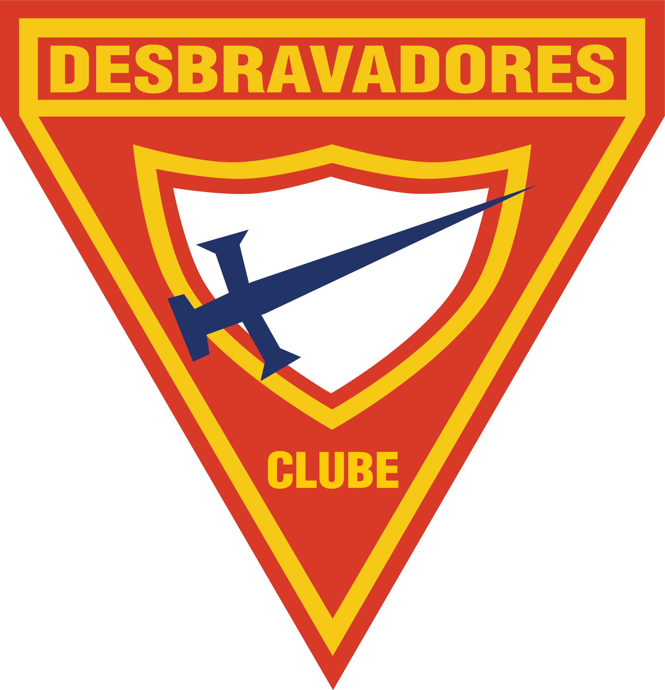

Sobre
Quem somos
O Clube de Desbravadores Estrela de Aço reúne crianças, adolescentes e famílias de Ipatinga desde 2002, unindo aventura, aprendizado e amizade em um só lugar.
O que são os Desbravadores?
Desbravadores é um clube para crianças e adolescentes de 10 a 15 anos, mantido pela Igreja Adventista do Sétimo Dia e presente em todo o Brasil e em outros países. As atividades combinam acampamentos, trilhas e aventuras ao ar livre com o aprendizado de especialidades práticas, ações de serviço à comunidade e formação de caráter — tudo isso dentro de um ambiente de amizade e companheirismo.

Nossa história
[Escrever aqui a história real do Estrela de Aço: como o clube surgiu em Ipatinga em 2002 e os marcos que ele viveu até hoje.]
Nossa missão
Ajudar cada criança e adolescente a explorar o mundo ao seu redor, aprender coisas que realmente pode usar, servir quem precisa e crescer cercado de amigos — com propósito, caráter e fé.
Quer fazer parte?
Venha conhecer o clube de perto.
Quero participar